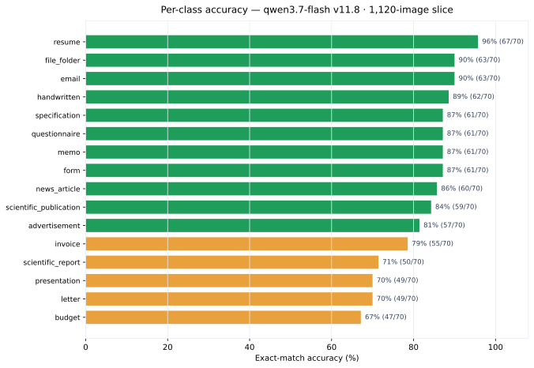

Headline Results
The numbers that matter: accuracy, the hard classes, and the accuracy–cost trade
The short version
The best slice accuracy is 99.4% — prompt v11.8 on the 160-image balanced set with qwen3.7-flash. On the largest held-out slice, 1,120 images spanning three dataset splits, v11.8 holds 82.6% (925/1,120) with a 0% failure rate and a 36.9% near-miss share among its 195 misses.

The accuracy arc
Prompt engineering moved this project from a 72.9% Gemini baseline to 99.4% on the reference slice — then the harder question became generalization. The same prompt at 320 / 480 / 800 / 1,120 images lands at 87.2% / 89.1% / 83.1% / 82.6%. The drop is dataset difficulty, not prompt regression: larger slices draw from the harder RVL-CDIP train split and add cross-split variety.
| Dataset slice | Images | Best version | Accuracy |
|---|---|---|---|
| fixed_size_sampled (v1) | 160 | v11.8 | 99.4% |
| fixed_size_sampled (v3/v4) | 160 | v16 | 96.2% / 79.4% |
| fixed_size_sampled_v2 | 160 | v13 | 86.2% |
| fixed_size_sampled_320 | 320 | v11.8 | 87.2% |
| fixed_size_sampled_480 | 480 | v11.8 | 89.1% |
| rvl_cdip_800 | 800 | v11.8 | 83.1% |
| 1600_balanced_1120 | 1,120 | v11.8 | 82.6% |
The full per-run record lives in the experiment log and the experiment reports.
Per-class performance on the 1,120-image slice
v11.8 · rvl_cdip_1600 · 70 images per class · 82.59% exact match (925/1,120).

| Class | Correct | Total | Accuracy |
|---|---|---|---|
resume |
67 | 70 | 96% |
email |
63 | 70 | 90% |
file_folder |
63 | 70 | 90% |
handwritten |
62 | 70 | 89% |
form |
61 | 70 | 87% |
memo |
61 | 70 | 87% |
questionnaire |
61 | 70 | 87% |
specification |
61 | 70 | 87% |
news_article |
60 | 70 | 86% |
scientific_publication |
59 | 70 | 84% |
advertisement |
57 | 70 | 81% |
invoice |
55 | 70 | 79% |
scientific_report |
50 | 70 | 71% |
letter |
49 | 70 | 70% |
presentation |
49 | 70 | 70% |
budget |
47 | 70 | 67% |
The three weakest classes are budget (67%), letter (70%) and presentation (70%) — budget and letter also dominate the confusion story below.
Where the misses go
195 misclassifications, 72 near-misses (the correct class was the model’s runner-up), 933/1,120 rows with a parsable runner-up. Fixing the near-miss tie-breaks alone would push accuracy to roughly 89.0%.
The recurring confusion pairs across every run:
letter↔︎memo— the single largest confused pair (~8% of all misses)budget↔︎invoice— tabular financial layoutsspecification↔︎form— multi-column technical documents
Browse the full reasoning traces in the misclassification appendix — each trace shows the model walking the 14-check cascade, naming its runner-up, and committing to a (wrong) label.
Failure rate and cost
- Failure rate: 0.0% on the 1,120-image run — the retry loop recovered every transient provider error, so accuracy is measured over the full slice.
- Billed $0.4937 actual vs $0.6815 list-price expected (+27.5%), averaging $0.000441/image. Prompt caching explains the gap: ~7,570 of ~12,000 prompt tokens/row were cache hits billed at ~10% of input price.
- Extrapolated linearly: $0.35 for 800 images, $11.02 for 25,000, and $141.07 for a 320,000-image production sweep.
See cost analysis for per-model pricing.
Honest caveats
The 160-image slice scores look flattering and are best read as a prompt-development signal. The per-class counts are tiny (10 images), and the v3/v4 disjoint slices (same prompt family) scored 96.2% / 79.4% — a reminder that 160-image numbers carry real variance. Trust the 800/1,120 rows for claims about production behavior.
Next moves (from the run analysis)
- Fix the 72 near-misses — sharpen tie-break rules between the top confused pairs (highest leverage, up to ~6.4pp).
- Revisit
budget/letter— the two classes whose low accuracy drives most of the miss budget. - Read the reasoning traces before the next prompt iteration — the raw reasoning exposes the exact rule each miss tripped on.